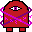

Blaster Boi
 Blaster Boi is a game that I always forget about.
Not because it's a bad game, but because it's a surreal achievement.
It doesn't feel real that I created a game in about a week that was this advanced for its time.
But I did, and as of May 25th, 2021, I have officially recovered it and can always remember it.
Blaster Boi is a game that I always forget about.
Not because it's a bad game, but because it's a surreal achievement.
It doesn't feel real that I created a game in about a week that was this advanced for its time.
But I did, and as of May 25th, 2021, I have officially recovered it and can always remember it.
This game was created in an attempt to explore programming a game in pure C#. Prior to this, I was using the Unity game engine. However, I wanted more control over the underlying systems and wanted to minimize the bloat that comes packaged with Unity. So I embarked on developing a game at a much lower level: Blaster Boi.
In this game, you use the W, A, S, and D keys to move, and hold Shift to sprint. You can shoot with the left mouse button. Both sprinting and shooting will consume a limited pool of energy, which will recharge over time. Your objective is to defend yourself from various enemies, whose difficulty and numbers will increase over time.
Blaster Boi was a milestone in multiple ways. Not only was it the first game I created in C#, it was also the first program I wrote proper AI for. You could argue there's some form of AI in Zombie Survival, but the intelligence in this is more diverse and intelligent. There are a few types of enemies: Maws, Gazers, Psychics, Big Brains, and their minions, Brainlings.
Maws are the simplest and first to be implemented. They walk towards the player in a straight line. They serve as fodder enemies and can easily be ignored.
Gazers are a slight step up. They will chase the player and periodically shoot bullets. While still considered fodder enemies, they pose a greater threat and can't be ignored as easily.
 Psychics are intimidating when you first encounter them. They maintain their distance from the player while rapidly shooting bolts of energy at them. Eventually, they stop and unleash a low-accuracy spray of energy, which can easily kill the player if caught in it.
Big Brains are my favorite; they're more of a boss-type enemy. Their AI is broken up into states. In their initial state, they teleport around the screen and unleash waves of energy towards the player. After a few teleports, they transition into a second state where they reflect incoming projectiles within a large radius. Once they finish, their final state is to spawn a few Brainlings and enter an idle phase, allowing the player a chance to deal with them. Finally, the state machine resets to the initial state.
Brainlings are simple enemies; they're small and fast, darting erratically to chase the player. They explode into bullets either upon getting close to the player or when killed.
You can tell that I had a lot of fun designing the AI for this game, particularly the diverse moveset of the Big Brains. Smart AI has always fascinated me. Watching AI adapt to new information and react accordingly is immensely intriguing and can greatly enhance a game for me. While this game isn't immersive and the AI can't respond to new information, it was my attempt at experimenting with new ideas and implementing AI that I found enjoyable.
You can download and play the game here. Your computer will think it's a virus, but there's no malicious code included.
Download Zip (58KB)